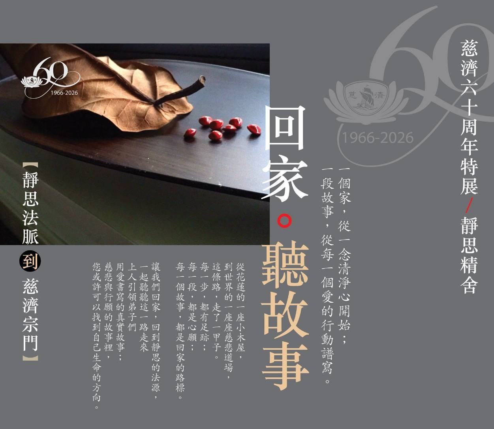

報名表單 - 三重和氣三、四
一個家，從一念清淨心開始；一段故事，從每一個愛的行動譜寫。從花蓮的一座小木屋到世界的一座座慈悲道場，這條路，走了一甲子。讓我們回家，回到靜思的法源，一起聽聽這一路走來，上人引領弟子們，用愛書寫的真實故事。
請填寫真實姓名
方便活動當日或遇雨取消時聯繫
含本人及隨行親友 (請填寫數字)
感恩您的發心參與。期待與您一同回到靜思法源，聆聽慈濟一甲子的真實故事。
報名人：
參加人數： 位
所屬區隊：
目前已報名總人數
位